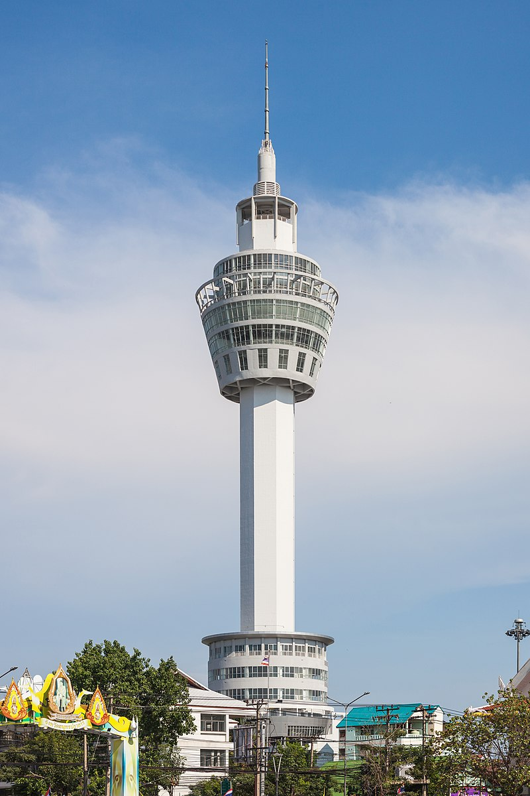

|

สมุทรปราการ เป็นจังหวัดหนึ่งในภาคกลางของประเทศไทย และยังเป็นจังหวัดในเขตปริมณฑลของกรุงเทพมหานคร จัดตั้งขึ้นครั้งล่าสุดโดย พระราชบัญญัติจัดตั้งจังหวัดสมุทรปราการ จังหวัดนนทบุรี จังหวัดสมุทรสาคร และจังหวัดนครนายก พุทธศักราช 2489 ซึ่งมีผลใช้บังคับตั้งแต่วันที่ 9 พฤษภาคม พ.ศ. 2489
ในด้านเศรษฐกิจ จังหวัดสมุทรปราการมีการทำนา, ประมง และอุตสาหกรรม แหล่งท่องเที่ยวและสถานที่สำคัญ เช่น ท่าอากาศยานสุวรรณภูมิ, พระสมุทรเจดีย์กลางน้ำ, วัดอโศการาม, วัดบางพลีใหญ่, วัดไพชยนต์พลเสพราชวรวิหาร, วัดโปรดเกศเชษฐาราม, ศาลพระเสื้อเมือง, พิพิธภัณฑ์ทหารเรือ, เมืองโบราณ, สถานตากอากาศบางปู, ป้อมพระจุลจอมเกล้า, สวางคนิวาส, ป้อมแผลงไฟฟ้า, ฟาร์มจระเข้ ฯลฯ |